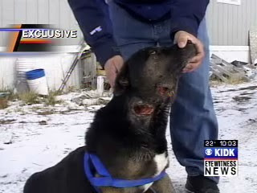

Each week, if not every day, brings in its train another illustration of the fact that those who scrutinize us cannot abide reciprocal scrutiny. Witness the apparent demise of the "Rate My Cop" website.
Carly Kullman, a one-time police cadet, explains that Rate My Cop was to be a national database of police officers and agencies. Users would be able "to browse through their own local police department and see how their local police force stacks up" when compared to other agencies across the country. The site would deal only in publicly available information about agencies and individual officers. Each officer would be rated on the basis of three criteria: authority, fairness, and satisfaction.
Rebecca Costell, a creator of Rate My Cop, said that the objective was to combat an emerging stereotype of police as abusive, violence-prone revenue hogs: "Our website's purpose is to break that stereotype that people have that cops are all bad by having officers become responsible for their actions."
Of course, stereotypes don't materialize spontaneously, and the image Costell describes has been abundantly validated over the past couple of years with the emergence of YouTube and other forms of cyber-samizdat. The near-ubiquity of cell phones and other digital recording devices has made it possible to record episodes of police misconduct, and video sharing sites have made those recordings available to anybody with a high-speed internet connection.
Rate My Cop's very practical and commendable contribution to the necessary -- and overdue -- public conversation about police misconduct is to provide an incentive for internal police reform: The site would help burnish the reputations of genuinely professional, service-oriented departments and officers, while goading others to clean up their act.
Does anybody else remember "Officer Friendly" (left, and below)? "Rate My Cop" would enhance the reputation of good police officers.

Additionally, as Kullman points out in reviewing the site, "People who are potentially moving to another city might use Rate My Cop to check out the police force in the area that they are moving to, allowing them to see how the police perform...."

In these ways, Rate My Cop would have applied the logic of the free market to the practice of law enforcement. The problem here, of course, is that our current approach to law enforcement is entirely statist, which means that it's designed in a manner intended to insulate it from market discipline.
In unadorned terms, the last thing police want is to be accountable to the communities they're supposed to be serving. Accordingly, police unions immediately began to shriek and keen that Rate My Cop posed a threat to ...
... wait for it ...
... wait for it ...
... that's right: "Officer safety."
I've said it before: "officer safety," not protection of the law-abiding public, is the highest priority of every police department, and every effort to reform police conduct or hold police publicly accountable is condemned as a threat to the same by the professional whiners who represent police unions.
In this case, there was a legitimate threat, since Rate My Cop did imperil the job safety of bad, indifferent, or corrupt police officers. Of course, it also offered a way to reward and promote the conscientious, heroic officers we are constantly assured constitute the vast majority of police.
Apparently, it was that positive stereotype -- which is still the preponderant image in most media and entertainment depictions of police -- that would have suffered, or perished, because of Rate My Cop. So the "law enforcement community," as an appendage of the Leviathan State, did what such people always do when threatened with accountability: They used the threat of legislation and criminal sanctions to compel Rate My Cop's creators to shut down the site.
"Behold, and tremble before, the Mighty Scolding Finger of Authoritarian Righteousness!" Utah State Senator Chris Buttars, hero to corrupt police officers everywhere.

Interestingly, the first recorded objections to Rate My Cop come from a familiar source: Utah state senator Chris Buttars, sponsor of SB260, a measure intended to suppress reports of police misconduct. As Salt Lake City CBS affiliate KUTV reported on February 12: "A main concern of SB260 supporters is with the buisness `rate-my-cop,' which is a national company that has made requests for misconduct reports on every officer in every agency in the area. Buttars believes that `rate-my-cop' will put the information into a data base and sell it to defense attorneys."
Buttars, like other petit-authoritarian Republicans with a basically Cardassian* concept of how the justice system should operate, finds it unconscionable that defense attorneys might have the means to impeach the testimony of a police officer. Those of us who understand that the purpose of a trial should be to force the State to prove the guilt of a defendant have no problem, of course.
I recently mentioned Senator Buttars and his proposal in connection with the case of Kevin Buttars, an abusive Deputy Sheriff from Montpelier, Idaho who may be related to him. As noted previously, Buttars was recently convicted of battery and sexual assault against a prisoner, and given a sentence of surpassing triviality for that crime.
Before the March 2007 incident that led to Buttars' conviction, he had worked as a law enforcement officer in Bonneville County, where -- according to some -- he had a reputation for being short-tempered, foul-mouthed, and unprofessional. It's easy to see why Buttars might have disliked a system like Rate My Cop. It's possible that a system of that sort might have weeded him out before he beat, choked, and simulated sodomy on a suspect who dared return the favor when Buttars started treating him to profane verbal abuse.

The Teton County Sheriff's Department offers another illustration of the potential value of a Rate My Cop-type system. The exquisitely lovely and thinly populated region of southeastern Idaho was thrust into the national spotlight with news of the drug-related arrest of actress Dawn Wells, better known to men of a certain vintage as Ginger's better-looking friend on Gilligan's Island.
Wells was stopped by a Deputy Sheriff last October while she was returning from a birthday party. Her car was reportedly bobbing and weaving on the highway. A search of the vehicle turned up a small quantity of marijuana and related paraphernalia. Wells apparently didn't test positive for intoxicants, and several witnesses testified that the weed belonged to someone other than the 69-year-old film producer. She was spared a drug charge, escaping with a small fine, probation, and a short jail sentence. (I doubt a common Idaho resident in the same circumstances would be blessed with a similarly favorable outcome).

As I read about this case, my second reaction -- my first being, "Wait a second -- Mary Ann lives here in Idaho?" -- was a moment of disgusted recognition when I read the name of the officer involved in her arrest: Deputy Sheriff Joseph Gutierrez.

About a month after he collared Gilligan's girlfriend, Deputy Gutierrez committed a felony by illegally attempting to murder a Black Labrador Retriever mix named "Bobby," a dog owned by Leo Barboza of a small town called Felt. Leo and his family got Bobby as a puppy about five years ago, and everybody in their neighborhood seemed to find the dog friendly and agreeable -- except for one mentally handicapped lady, who filed several police reports claiming that the dog had attacked her. This troubled woman, significantly, was notorious for causing problems with dogs, rather than being the victim of canine misconduct.
On November 12, Deputy Gutierrez materialized on the front porch of the Barboza family's home and announced that he was there to kill their dog. Alarmed, Leo demanded to know what proof there was that Bobby had done any harm to anyone; Gutierrez arrogantly proclaimed that he didn't need any proof.
Yes, he may have had a steenkin' badge, but Deputy Gutierrez didn't need no steenkin' evidence.
Cowed by the presence of a bellicose bully in a State-issued costume, Leo obediently brought out Bobby and tied him up in the front yard. His wife, father-in-law, and three-year-old son all watched in a state of growing agitation as Gutierrez retrieved a rifle from his vehicle. Nearby, a bus deposited a group of curious schoolchildren -- who stood paralyzed in the street, their innocent eyes growing wide with incredulous alarm as they took in the spectacle coalescing in front of them.
In what could be described as a "life-imitates-Napoleon Dynamite" moment -- but worse -- Gutierrez shot Bobby in the head three times as the screams of terrified children rent the air.
(What follows is not a re-enactment; article continues after the jump)
At about 3:30 that afternoon, Gutierrez wrote in his incident report: "Shots fired. Dog is dead." Barboza's traumatized family had to endure another shock as Leo's aging father-in-law suffered a severe anxiety attack that left him hospitalized.


Survivor of lawless police violence: Leo Barboza shows Bobby's gunshot wounds (left and below).When the family returned, they found, to their astonishment, that Bobby was alive -- albeit severely wounded and bleeding profusely. They called the local media to report the atrocity committed by Gutierrez, and shortly thereafter filed a lawsuit.
Although Gutierrez was suspended, Sheriff Kim Cooke insisted -- let's say it together, now -- that he had acted properly according to department policy. Cooke maintained that Gutierrez was authorized to kill the dog under Section 8.11.4 of County Ordinances, which permit "vicious" dogs to be destroyed if they are "found at large" and "cannot be safely taken up and impounded." He also simpered that his department had received numerous death threats because of the publicity Gutierrez's crime had received.

Oh, I see: It's a matter of officer safety again.
Only in this case, Gutierrez's criminal actions had created a threat to officer safety -- assuming that the comments reported by Cooke were actually made, and should be taken seriously.
Bobby was not at large; he was on Barboza's property. He was not a "vicious" animal, since he submitted to being tied up and shot without much difficulty (Gutierrez, by his own account, was on the Barboza's property a total of ten minutes.) County ordinances and Idaho law specify that a dog must be found to have committed two confirmed attacks before being regarded as vicious, and that its owner has ten days to challenge that designation before a judge.
In other words: A dog, being a form of personal property, cannot be destroyed without due process of law.
And -- note this well, Gutierrez -- "due process" doesn't automatically occur whenever some punk-ass tax-feeder in a State-issued costume makes a demand of innocent people.
Gutierrez, significantly, is a recent graduate of the Idaho Peace Officers Standards and Training academy (I-POST). He is also a former Marine, albeit one who apparently doesn't live up to the expectation that every Marine should be an expert marksman. However, he does exemplify the credo of last December's I-POST graduating class: Don't suffer from Post-Traumatic Stress Disorder -- go out and cause some. Of this, Barboza's family, which includes a traumatized senior citizen and a nearly murdered dog, can attest.
Sheriff Cooke couldn't resist a gratuitous dig at the Barbozas, claiming that the family's delay in getting medical help for Bobby demonstrated that they had been irresponsible in their maintenance of the dog.

Talk about a cluster-bomb of hypocrisy. If the arrogant, ignorant berserker Cooke had hired as a deputy had followed the rules, none of this would have happened. If he had killed the dog outright, it wouldn't have needed the medical care it didn't receive while the Barbozas were dealing with the more urgent matter of the father-in-law's anxiety attack.
Sheriff Cooke is not only a hypocrite and a cretin, he's also something of a criminal kingpin, since at least half of his department (three out of six deputies) have recently been under criminal investigation.
The Idaho Attorney General's office has considered criminal charges against Gutierrez (on previous performance, Gutierrez has little to fear from the AG's office). Two other deputies, Nate and Mat Froehlich, are also the subjects of official inquiries -- Nate for insurance fraud, and Matt for abuse of police power.

Reid Rogers, president of the Teton Valley Chamber of Commerce, probably wasn't exaggerating when he told the press that “There’s a growing discontent about the level of performance generally" with the Sheriff's Department. All three of the scandal-tainted deputies are in their twenties, fresh of the fascisti farm. If they're cashiered in Teton County, chances are they'll show up on some other force elsewhere in the country.
This situation is altogether too typical of what's happening in law enforcement nation-wide, and it illustrates both the desperate need for a Rate My Cop-style resource, and some of the reasons why the "law enforcement community" will do whatever it takes to keep us from getting one.

On sale now!
___
*The Cardassians were a fictional alien race -- militarist in disposition, and thoroughly statist in their culture -- featured in recent versions of Star Trek. Their "justice" system was designed for the sole purpose of vindicating the State and teaching subjects to submit to its all-encompassing wisdom. Guilty verdicts were preordained certainties in trials held on Cardassia Prime.
Dum spiro, pugno!
29 comments:
My old friend you have hit the nail squarely on the head. It is this abusive, militaristic culture currently being fostered within our law enforcement community that dissuaded me from joining their ranks years ago. I no longer trust them as I once did and teach my children to be wary of them as well. There are plenty of good cops still out there but their numbers are dwindling as each new crop of high speed low drag tactical wonder wanna-be super cops hit the streets. Each new class going through I-POST is taught to be increasingly agressive when dealing with the public. And then they wonder where this "us vs. them" attitude came from.
yeahoo. Rate my cop is back. Google it.
The "Rate my Cop" concept is pretty neat. To reject its function for officer safety reasons is silly.
However a problem I see with this type of service is that of the veil of anonymity. Take as an example the case of Policeman Jones. He goes after the gang bangers and crooks who infest his beat. And assume he follows the rules while doing his job. The bad guys feel the heat. So they file complaints with the department accusing him of malfeasance. On top of those complaints they go to Rate My Cop and begin to drag him through the mud. Policeman Jones (assuming he works at a pd where the supervision investigates complaints) gets the message loud and clear; Leave THEM alone. If you don't you'll be called in on a regular basis and be the subject of endless investigations. The more organized hard core gangs already use this method to counter the efforts of the tireless cops trying to lock them up.
Legitimate whistle blowers could fall victim to this type of service as well. If Officer Friendly doesn't play ball with some scumbag cops in his pd he could be the target of a well organized campaign run by the dirty cops. A game of reversal for all of the public to see.
I must admit I'm a "tweener" on this. Holding the fuzz accountable for wrongdoing is critical. But not being able to face someone who accused me in a public forum of rude behavior or violating their rights would really get my Irish up! What is a cop to do? Log on every night to counter accusations from nameless people to preserve his good name and honor?
I suppose this is the price to pay for being a civil servant.
Hope the site gets back up. How is it that those people were going to let that jackboot kill their dog without due process? How is it possible to be so clueless about our legal system? The cops are encouraged to behave this way when the citizenry behave like german jews going to the camps. That is why, as discussed earlier in this blog, we need to get the right of reasonable resistance against unlawful "law" enforcement established. In this case with the dog, I'd first tell the thug, who probably got off on torturing dogs in the marines and missed the thrill of it, that I'd be glad to lock the dog up until the legal system had time to work. If he refused, I'd call the police and tell them that an officer was attempting to murder my dog. If he tries to break in my house to get the dog, I use proportional force. If he threatens lethal violence, then I shoot him dead like any other brigand. If all of the above occurred and this were a free country, my actions should be protected under the law.
how about:
www.ratemyDA.com
www.ratemyJudge.com
www.ratemyCongress.com
the possibilities are endless :)
Mr. Grigg,
I greatly admire your abstemiousness as you shine a (hopefully) cleansing light of journalistic revelation upon the cankerous malfeasance that has taken root in modern law enforcement's principle foundation - its ability to distinguish right from wrong.
Like other readers, I once viewed the police as praiseworthy allies in the battle to preserve and protect a good and decent American way of life. No longer. They, the police, have traded - gleefully so - their place of honor in that battle for the base and egocentric thrills that accompany the pursuit of blitz, power, and ill gotten gain. No longer can they be counted upon to uphold any part of the solution, but are to be viewed, at best, as part of the problem.
McCain - Bernanke for president. McCain with his past aviation/military experience will pilot the helicopter while Bernanke will throw the cash.
As a cop, i gotta say that some of your comments ring true. That being said, I think your entry tends to generalize the behaviors of cops. There are a lot of hard working, fair, decent people in our profession. And for the record, I got off shift a couple hours ago. Some fellow oficers and I had a conversation towards the end of the night about Rate My Cop. We were unhappy to see it taken down. As long as safeguards were in place to keep our personal info off the web, let people have their say. If someone feels slighted by something we've done, we want to know. Just like you in your job, I assume, you strive to improve throughout your career. But to return to my earlier point, please don't let the "bad cops" get you down. Most of us are out there trying to do good by the communities we and our families live in.
Officer Anonymous, your points are well taken and elegantly expressed. Thanks for dropping by, and please visit here frequently! God bless you and yours.
I am inclined to repeat an analogy that someone I know has often referred to which indicates that law enforcement consists of nothing but swine. Upon pondering the fact that some people I know eat pork, thus excusing the existence of pigs, I will refrain from such a comment as it would be an insult to hogs everywhere.
I would agree with anonymous cop. Many cops are fair, honest and decent human beings. I fact I have found many in the area in which we live to be very strong proponents of the second ammendment. There are some bad ones to be sure. A lot of them tend to be in departments where the chief is dirtbag. It seems the upper management plays a large part in determining the personality types that will make up the force.
I thought I was the only guy who liked Mary Anne better than Ginger, ah great minds think alike.
Whatever happened to the policeman who was our FRIEND? The neighborhood cop who we all looked up to as the GOOD GUY?
America is not what it was.
William this is the result of over 4 decades of the ADL and AJC teaching Federal, State, and local law enforcement. Can you imagine?!
What would the outcry be if say Dutch Reformed Church was holding seminars for all levels of law enforcement and focusing on shaping what police look for and how they view certain topics and people? Why the ACLU would be roaring in anger.
Yet not a PEEP in media or elsewhere.
What you see that you dislike in the mentality that gave us WACO, Ruby Ridge, and local cops putting their knees on the head of an elderly man in a diabetic coma well you can thank the Anti-Defamation League of B'nai B'rith and the American Jewish Committee.
How many of Officer Anonymous' "hard working, fair, decent people in our profession" refuse to enforce anti-gun laws and other overtly unconstitutional statutes or assist the odious BATFE? Every LEO I've met swore an oath to support and defend the Constitution then spent a career betraying that oath while falsely claiming otherwise. I expect to encounter a unicorn or an honest, competent attorney before I meet a genuinely decent LEO.
LEO's who use their discretionary powers to willingly bust low level, non-violent drug offenders are a bunch of number humping bureaucrats with guns strapped to their hips. They are not interested in their oath to protect and serve the public.
Watch "American Drug War: THe Great White Hope" and compare and contrast the "skid rows" presented in Amsterdam, Holland with the utter sh*thole in LA with all the heroin ballons everywhere and nonfunctional people all over the street.
The difference you ask? The difference is the LEO's approach to the war on some drugs and the outcomes speak for themselves. The Amsterdam skid row was clean, and the shows producer had to look for a crack addict, while in the US the crack dealers and users were everywhere, it looked like a third world country, not the US.
Our LEO's have lost touch with their humanity and joined the dark side. If they were interested in protecting the citizens from the real criminals, they would be refusing to participate in the bogus war on some drugs. Hope for the best...but prepare for the worst.
The irony in the Dawn Wells incident is I bet she wished she was a castaway!
Unbelieveable that a group of thinking people so willingly accept the manipulative rant from Officer Annonymous where he makes two insipid comments.
1) There are a lot of hard working, fair, decent people in our profession.
and
2)If someone feels slighted by something we've done, we want to know.
In response to number 1, I would say that any cop who knows about any brutality, or misdirected (and almost all such efforts ARE misdirected) efforts to persecute ganja tokers are simply NOT fair OR decent. They are terrible thugs, just like the ones committing such attrocities in the first place. There is a concept in theology that one who encourages, provides opportunity or fails to try to stop someone from sinning thatt hey are as guilty as the sinner. This applies here in spades.
Second, wher the f**k does anyone get off reading about a pig browbeating a family into allowing his brutal attempt at murdering the family dog, then make the statement that indicates that this behavior is merely a slight.
Some might wantt o encourage this pig to come back, but I will not be suckered by this lying trash into downplaying the widespread brutality of the police, and the equally guity pigs who allow them to continue without OPENLY demanding action against the brutal thugs and refusing to work with them AT ALL.
Well, this is great. My name is plastered everywhere and parts of my article have been spread across the internet. Wooo hoooo.
Too bad nobody has a link to the real article that I posted.
http://www.associatedcontent.com/article/651775/to_serve_protect_rate_my_cop_offers.html
We, a growing nation, need to reform our laws and the way we treat each other. No one has respect for another now a days and its pathetic. All people want in this world is to make them selves more powerful,and have money. its all the US is interested in now a days. This society will not work when no one respects another or even has a little love and sympathy. I, believe that every one should have the same oppurtunity and the same chances as the rest and thats not the case. people such as cops and politions are so corrupt now a days. The federal government needs to start cracking down on people with high power. power=corrupt especially in our society as we see it more and more every day who will ever stop it?
rate my cop? why are cops so worried to they have something to hide? Maybe if they were loyal and fair to every citizen then they wouldn't have to worry about danger. Wow the things you can realize if you think, AMAZING!
It saddens me that others have nothing better to do. Our nation is in trouble and you're concerned about our cops and everyone need to be mindful and respectful of all the police officers all across the United States. I think you should use your time, money and energy on how we can help improve the communities and our nation. All across America others are loosing their jobs and homes. That's why we have a judicial process and if you or anyone else feels that there's a problem with any cob than it should be done decent and in order. I pray not only for you but, for our nation. You're trusting anyone to put anything about an officer and I advise you to consult with a lawyer because, you're leaving yourself open for many lawsuit. Next time please read and see what the law says about libel. You're proud that you created this cite but, what if someone post something negative untrue information about an officer and guess what there is a such thing as slander and libel. Please take my advice and close this cite down before you get hit with mutiple lawsuits. Also, some people always mention their constitution rights read futher and see what it says about freedom of speach. you're provoking potential harm and danger.
Thanks concerned citizens and I love and respect all police officers and firefighters we have a greater fight with politicians. They create the laws and break them why don't you focus more on educating the people about voting...
Remember we're all surpose to obey the law. Judge not for ye may be judge...
PTSD is an anxiety disorder that is related to surviving a traumatic event, in which you feel your life or someone else's life is threatened. These events can be catastrophic, such as natural disasters, terrorist attacks, and war zones. Often times the event may be more individualized, such as a serious car accident, physical or sexual abuse, or animal attack. http://www.buy-xanax-online-now.com/
I would take a moment, and only a moment, to respond to this simple-minded blog about "hiding behind officer safety". While examples appear where misconduct occurs, when you look at the vast numbers of police/community interactions that happen on a daily basis, the misconduct is very few and very far between. The incident you depict of the officer shooting the family pet is terrible, and I (being a police officer) would never support someone who acted in such a way. However events like that get sensationalized beyond reason thanks to our warmongering media. I will let you in on a little secret as well, for all of us who wear the badge that don't partake in such wrong-doings, we want to see punishment more than you do because that guy is giving the rest of us a bad reputation.
However, concepts such as "Rate My Cop" is easily a serious concern for police officers everywhere, and not because we are worried about getting caught doing something wrong.
Anyone who has never served in the armed-forces or as a police officer cannot (and usually don't bother to try to) understand what it is like to be placed in situations where it could be literally your life or someone else's that hinge on every decision that you make. To know that if you don't take command and establish dominance in every (yes every) situation that you are in could mean that someone gets hurt or killed is a huge burden to bear. To have something else that adds to that burden (i.e. who is watching this event that only gets half the story but wants to sound off for their fifteen minutes of fame) is not only irresponsible, it is just plain stupid. All it does in encourage the general public to look over our shoulder even more, and possibly end up complicating a situation further just by doing-so.
While we are taught to be aggressive in situations, we are also taught a word that is beaten into us from the outset. Liability. Every time we answer your calls for service and are forced to lay hands, fight, spray, taze, or (God-forbid) shoot someone, we have to worry about who is going to sue us. We can do everything by the book, straight down the line, and still end up sitting in the seat labeled "Defendant". Combine that with the fact that we usually have NO idea what or who we are dealing with on every traffic stop, domestic call, or any other call to service, I think it is fair to say that we have enough on our minds without some internet website encouraging everyone to Monday morning quarterback our every move.
Officer Safety? You had better believe it. I have a loving wife that I am going to go home to every night after my shift. Which one of you out there would like to stand up and tell me that you have the right to say I handled a potentially dangerous situation incorrectly, when it was you who called me because you couldn't handle said situation on your own to begin with?
This very article is demonstration of why so many people choose to go into other lines of work instead of policing. The paycheck is laughable, the hours are bad, and you might get killed on your next call. What could top that off? Oh yeah, the people you are trying to help want to be able to "rate" you in case they think you were too demanding, or rude, or had a bad attitude.
As I stated earlier, I love to see officers who do not obey the laws they swore to uphold punished, but don't generalize that we are all crooked and are just scared of getting caught. If you are so keyed up to hate the police, the next time you are in trouble call a crackhead instead. If you think you can do my job better than I do, I know there are no shortage of openings at police departments around the country and I encourage you to give it a try.
In closing, I pose a question or two to you. How liberal will you be when the person who flees from me on a traffic stop (that I can't chase because of liability reasons) runs head-on into a car full of your loved ones? Will I be too rude or rough with the person who breaks into your house in the middle of the night looking for your children? And finally, who will come to your rescue when all the police officers can no longer take the constant abuse that is thrown at them by the people they swore to protect?
I pose a question or two to you.... [W]ho will come to your rescue when all the police officers can no longer take the constant abuse that is thrown at them by the people they swore to protect?
While police come in for their share of criticism, they are for the most part lionized, rather than abused, by the entertainment and news media and most of the public.
Many police do help people in dangerous situations. But under existing court precedents there is no civil or legal liability (there's that word again) that attaches when a police officer fails or refuses to protect a specific individual threatened in a particular situation. That's why citizens should be prepared to defend themselves, rather than relying on the rented services of strangers.
[W]e usually have NO idea what or who we are dealing with on every traffic stop, domestic call, or any other call to service....
Those of us in the general public likewise have no idea who WE confront when we are stopped by armed strangers wearing the insignia of the most dangerous criminal syndicate in human history (the government that rules us). "Rate My Cop" can help address that disadvantage, albeit generally after the fact.
To know that if you don't take command and establish dominance in every (yes every) situation that you are in could mean that someone gets hurt or killed is a huge burden to bear.
Well, let us help you lay that down that burden!
What about the burden of those of us who are expected to submit to your "dominance"? Submission is something not properly required of any free individual, by anyone, at any time.
How can one reconcile the idea of "serving" the public with the directive to "dominate" every encounter with the same? Could it be that at least some of the burden you refer to is the product of cognitive dissonance?
I hate to say it, but you show your ignorance more and more with each post I read from you. I also like how you conveniently dodged the question about how you would feel if your family were victimized by someone I couldn't arrest thanks to the choke-chain that is placed on officer's necks and tightened by the minute by the "good" people just like you.
Here are some facts for you to chew on. In many other countries, the police are viewed with a massive amount of respect and reverence. Is it because they are the kinder, gentler people? Hardly. If you are suspected of a crime, the first thing they do is make you submit by WHATEVER force necessary, and then they ask you whatever questions they need answered. If it turns out you are innocent, they take you out of handcuffs and send you on your way. You know what? No one has a bad thing to say about the police officers, and the crime rate is significantly lower. It is almost nil in many areas. What else? The citizens LOVE them for their service. Do they look at it as police brutality? Of course not, because all that you have to do is comply and you have nothing to fear. What's more, they know that their streets are safer because criminals are afraid of the consequences. Are there examples of police abusing their powers? Certainly, but I challenge you to show me one profession out there that is free from some measure of corruption.
You can rant and rave on here about how aggressive police are becoming, but the bottom line is we are forced to be that way by the public we serve. I face people who size me up daily. People who steal cars, murderers, rapists, child molesters, you name it. How can I tell them from you? Is it because you are in a suit? Is it because you tell me that I should trust you? Is it your income level? How do I know the person who wants to kill me from the person who wants to shake my hand? Is it worth my life to sit around until I figure it out?
I will leave you with the example of an officer who was killed in the line of duty. Previously to the incident that claimed his life, he was reprimanded for pulling his duty weapon in a situation where he felt threatened, and the person he encountered decided to file a complaint. The officer was not in the wrong, but was told to think of "public perception" when drawing his weapon. The officer makes a traffic stop, and encounters a person who is ex-military, and mentally impaired. The man begins dancing in the road, refusing to follow police instruction, and ultimately returns to his vehicle and recovers a firearm. He shoots the police officer as he is calling for help, wounding him. The man then advances on the police vehicle, stands over the wounded police officer, and fires the last round into the face of the downed officer, uttering the final word "Motherfucker" as he squeezes the trigger. The officer never pulled his weapon, and the wide-spread belief is because he had been chastised about public perception before the incident.
You sir, contributed to the death of that officer. You, and everyone else who want to be taddle-tales when someone is rude to you. Deal with it. If you start digging around in your pockets when I instruct you to keep your hands where I can see them, you'll see my gun drawn. If you resist, I'm going to subdue you. If you run, I'm going to chase you. If you fight, I'm going to fight harder, and I'm going to win.
You HAVE the right to resist false arrest. You HAVE the right to due process of law. You HAVE the right to be safe in your home. You HAVE the right to walk down the street and not be robbed. You HAVE all of those things because we are on the front lines to give them to you. You, your neighbor, your grandma, or any of the countless other people in this country called us because the situation was out of their control. They didn't invite us over for dinner. They weren't just calling to see how our day had been. They weren't interested in hearing about us telling a young, single mother that her son was killed by a drunk driver earlier in the night. They called us because they were afraid. They called us because they had and emergency, and something bad had happened. Someone was trying to hurt them, and that someone might be you.
The bottom line is we are here to save your ass, not kiss it. As I said before, and I still stand by it with fierce determination, if you honestly think you can do a better job by all means put your application in immediately. If you hate us and our government so much, leave. The sad part is, I would still lay down my life to save yours if given the oppurtunity.
As one of my favorite fictional characters once observed: "Ah, arrogance and stupidity in the same package -- how efficient!"
I'm not in the habit of dealing in sterile, useless, self-serving, manipulative hypothetical questions. They are examples of a form of delusional adolescent illogic called "magical thinking."
Another really good example occurs later in the same post in which you accused me of somehow being implicated in the death of a police officer whom I'd never had any involvement, presumably because I share the opinion that armed bureaucrats shouldn't be permitted to intimidate innocent citizens without consequences.
(It's a further demonstration of your incurably juvenile mind-set that you refer to people who wish to hold officers accountable as "taddle-tales" -- an example of good-enough-for-government-"work" spelling, incidentally; the term is generally spelled "tattle-tales.")
When not indulging your adolescent petulance, you have retailed bumper-sticker bromides -- such as your closing observation regarding kissing vs. saving the public's ass. Yes, I've seen and reported on that typically self-glorifying police bumper-sticker.
The fact is, you're here as a revenue farmer for the government, and any aid you'd render to me or anybody else would be exceptional and incidental to your primary occupation.
As someone who intends to live as a free citizen, my anatomy is my own to save, thank you -- and quite frankly, cretinous armed functionaries like you are a FAR greater threat to it than any potential private threat.
You are quite skilled with a thesaurus, I wonder why it is that you can't seem to come up with any sort of valid counter-point to the posts. I won't waste my time showing you examples, facts, or statistics because I can see now that you aren't looking for any sort of actual productive debate. You simply want a soap box, and are forced to revert to attacking spelling choices in the face of someone who can provide a valid argument against you. Good luck to you sir, and by all means feel free to call that crackhead I mentioned earlier instead of me. To hear it come from you, he will do a better job anyway. May your family never be in danger, may your life never be threatened, and may your property never be taken from you. Because if any of those things happen, you will find yourself in need of us. When you do, be sure you thank the officer for the job he or she does, and I hope your words you have to eat don't have too bad of a taste for you to swallow. You can skip the response if you hope for me to see it, because I won't be returning here. However, I highly doubt you have ever let someone else have the last word in your life.
"Insert random thesaurus-beaten response about nothing here"
TOO LATE..ratemycop has been taken over by bully cops who are kicking people off the site as they see fit...their is no 1'st amendment safety and no safety in rating cops anonymously..something those cops in power (on site) do not understand.
God bless our police officers! After the abuse I witnessed our officers take after the Ferguson issue, I support them 100%!
Did you sympathize at all with the entrepreneurs whose businesses were burned and pillaged in the riots while the cops either stood and watched, or made a priority of protecting government facilities?
Unless you're part of the political class, the police don't protect you.
Post a Comment